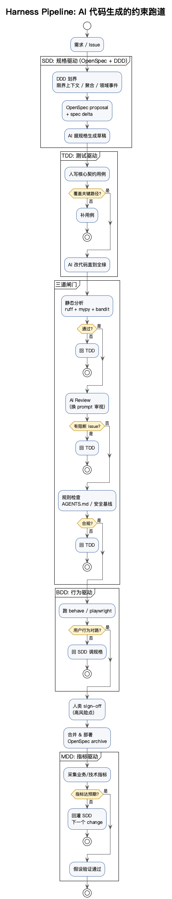
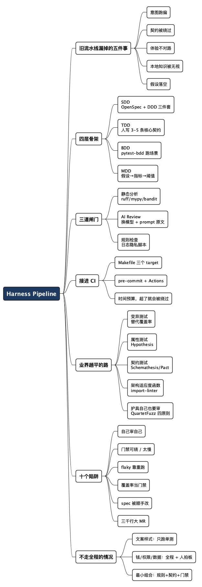

Harness Pipeline：给 AI 编程套一条带护栏的跑道
Posted on 四 21 5月 2026 in Tech
| Abstract | Harness Pipeline：给 AI 编程套一条带护栏的跑道 |
|---|---|
| Authors | Walter Fan |
| Category | Tech |
| Status | v2.0 |
| Updated | 2026-10-15 |
| License | CC-BY-NC-ND 4.0 |
大纲
展开看看
- 漏掉的五件事：意图、契约、体验、本地知识、上线假设——旧流水线一件都不管
- 四层骨架：SDD 管意图、TDD 管契约、BDD 管体验、MDD 管假设，每层配一件可抄的东西
- 三道闸门：静态分析的命令、AI Review 的 prompt 原文、三十行的日志隐私检查脚本
- 接进 CI：Makefile 三个 target + GitHub Actions + pre-commit，顺序就是成本顺序
- 端到端实战：给 FastAPI 加限流，从 spec delta 到契约测试到指标埋点
- 业界趟平的路：变异测试、属性测试、契约测试、架构适应度函数，配工具链接
- 十个常见陷阱：自己审自己、门禁可绕、flaky 糊弄、覆盖率当门禁、spec 被顺手改……
- 什么时候不值得走全程：按改动类型决定走到哪一关，小团队的最小可用组合
- 落地顺序：三周五步，每步标清成本和收益
- 参考资料：标准指南、论文、工具，每条标清值得看什么
周五下午四点，AI 半小时帮我写完一个 feature，单元测试一片绿。
我盯着 diff 看了五分钟，没看出什么毛病。点了合并按钮的那一刻，心里却没底——不是怕它写错了，是怕它“对得太工整”，工整到我没办法判断它有没有偷偷绕过某个边界条件。
这种心虚，过去十几年写代码很少有。以前 Code Review 看一段陌生代码，至少知道“作者大概是怎么想的”，看几眼就能判断要不要追问。AI 写的代码不一样：它没有“想法”，只有“模式”。模式对了，逻辑可能错；模式眼熟，安全可能塌。
AI 让“写代码”变快了，却让“交付代码”变难了。难的不是技术，是责任——谁为这段代码上线后的行为负责？下面这条跑道就是用来接住这份责任的，我把它叫 Harness Pipeline：骨架 SDD → TDD → BDD → MDD，中间穿三道闸门。
- 每一层都配一件能直接抄走的东西：OpenSpec 命令、契约测试、review prompt、检查脚本、CI 配置
- 也给判断表：哪些改动根本不值得走全程
一、旧流水线漏掉的五件事
传统 Build Pipeline 回答的问题很朴素：这段代码能不能跑、跑起来对不对。它成立的前提是代码由人写、测试由人维护、出了问题能追到人。AI 编程把这三条前提全抽掉了：代码是生成的，测试可能也是顺手生成的，提交人是你但你只 review 了一部分。
于是风险点整体平移了。新的五件事，旧流水线一件都管不了：
| 漏掉的 | 旧流水线为什么管不了 | 这条跑道里谁来管 |
|---|---|---|
| 意图跑偏 | 构建成功不等于做对了需求 | SDD：spec 先评审 |
| 契约被绕过 | 测试是 AI 自己出的卷子 | TDD：核心契约人来写 |
| 体验不对路 | 单测全绿不等于用户舒服 | BDD：场景验收 |
| 本地知识被无视 | linter 不知道你们项目的规矩 | 规则检查脚本 |
| 假设落空 | 没人回头看上线后的数据 | MDD：指标回灌 |
一句话定义：Harness Pipeline 是 AI 代码生成的约束跑道，前面用四层骨架定方向，中间用三道闸门挡 bug，后面用一个反馈环验假设。

核心思想只有一句：让 AI 在每一关被卡住，而不是事后让人兜底。因为 AI 修代码比人快，但判断“这段代码值不值得上线”比人差远了。把判断留给人，把修复交给 AI，分工才对。
二、四层骨架：每层配一件可抄的东西
| 层 | 在 AI 之前/之后 | 防什么 | 谁说了算 |
|---|---|---|---|
| SDD（Spec-Driven） | 之前 | 防意图跑偏 | 人写规格 |
| TDD（Test-Driven） | 之前 | 防契约被绕过 | 人写核心、AI 补边角 |
| BDD（Behavior-Driven） | 之中 | 防用户体验跑偏 | 人定场景 |
| MDD（Metrics-Driven） | 之后 | 防假设落空 | 数据说话 |
SDD：规格即合同（OpenSpec 装载体，DDD 填内容）
最早我也只是在项目里塞一个 spec.md。能用，但规格散在各处、没人 review、改了没人知道，更别说追溯“上一版我们承诺了什么”。规格要当第一道闸门，得满足三件事：可工件化、可 diff、可归档。
OpenSpec 做的就是这个（GitHub 官方的 spec-kit 是另一条路，流程更重、阶段门更硬，按口味选）。装和用都很短，需要 Node.js 20.19 以上：
npm install -g @fission-ai/openspec@latest # 或 brew install openspec
cd your-project && openspec init # 生成 openspec/ 和各家 agent 的指令
# 然后在你的 AI 工具里走四个命令
# /opsx:explore 还没想清楚时，先当思考搭子
# /opsx:propose add-rate-limit 生成 proposal.md + specs/ + design.md + tasks.md
# /opsx:apply 按 tasks 逐条实现
# /opsx:archive 归档进 specs/ 基线
一个 change 落在磁盘上长这样：
openspec/
changes/
add-rate-limit/
proposal.md # 这次改什么、为什么
design.md # 关键设计决策
tasks.md # 拆到可执行任务
specs/ # 本次引入的需求与场景
specs/ # 已发布的规格基线
changes/archive/ # 归档后的历史 change
好处是立等可见的：AI 读 proposal.md 知道意图、读 specs/ 知道边界、读 tasks.md 知道怎么拆步骤；人 review 的是 spec 变更，跟看 git diff 一样直观；change 落地后进基线，下次改动有据可查。
那 DDD 在哪里？DDD 不是工具，是教你“规格里到底该写什么”。OpenSpec 给你表格，DDD 告诉你怎么把表格填对，具体就三件：
- 限界上下文：先问“这事属于哪个上下文？网关？账单？身份？”想清楚再下笔，AI 才不会把限流逻辑揉进业务 service
- 聚合：明确这次改动的一致性边界。限流计数器是网关上下文里的聚合，TTL 一过就重置，不需要落核心业务库
- 领域事件：把“发生了什么”显式化。
RateLimitExceeded是个事件，不是一个 if 分支——写进 spec，下游（告警、计费、风控）才有对接口子
我自己的习惯：写 design.md 之前，先在纸上画这三件——上下文图、聚合边界、关键领域事件。十分钟一张草图，AI 生成的代码就带着领域感，而不是对着 REST URL 拍脑袋。
TDD：人写核心契约，AI 填实现
TDD 在这条跑道上是第一道客观闸门：红不变绿，不许往下走。
这里有个坑：让 AI 同时写代码和写测试，等于让它自己出卷自己批改。分工应该是——人写 3 到 5 条核心契约（关键路径、边界值、异常分支、安全约束），AI 填实现，剩下的辅助用例再交给 AI 补。补完人只 review 一个问题：这条测试是在测行为，还是在测实现？改个私有变量名就红的，删掉。
还有一件常被忽略的事：护具自己得是确定性的。限流这类带状态的功能，不加重置夹具，测试之间会互相投毒，执行顺序一变就红。两个夹具放 tests/conftest.py，单测和 BDD 共用：
# tests/conftest.py
import pytest
from fastapi.testclient import TestClient
from app.main import app
@pytest.fixture
def client():
return TestClient(app)
@pytest.fixture(autouse=True)
def _reset_limiter():
from app.middleware.rate_limit import limiter
limiter.reset()
yield
BDD：把验收写成能跑的场景
单测全绿，不代表用户走进来不别扭。BDD 用 Given-When-Then 挡的是“通过测试但不对路”那一类：限流单测全绿，可第 101 次请求返回的是 500 还是友好提示？响应体长什么样？单测经常压根没管。
场景不要停在文档里，pytest-bdd 几行就能让它真跑起来：
# features/rate_limit.feature
Feature: API 限流给用户友好的提示
Scenario: 超过限制时返回友好响应
Given 客户端 "c3" 已经请求 60 次
When 客户端 "c3" 再次请求 "/api/v1/search"
Then 响应状态码是 429
And 响应不包含 "algorithm" 字段
# tests/test_rate_limit_bdd.py
from pytest_bdd import scenarios, given, when, then, parsers
scenarios("../features/rate_limit.feature")
@given(parsers.parse('客户端 "{cid}" 已经请求 {n:d} 次'))
def _warm_up(client, cid, n):
for _ in range(n):
client.get("/api/v1/search", headers={"X-Client-Id": cid})
@when(parsers.parse('客户端 "{cid}" 再次请求 "{path}"'), target_fixture="resp")
def _again(client, cid, path):
return client.get(path, headers={"X-Client-Id": cid})
@then(parsers.parse("响应状态码是 {code:d}"))
def _status(resp, code):
assert resp.status_code == code
@then(parsers.parse('响应不包含 "{field}" 字段'))
def _no_field(resp, field):
assert field not in resp.json()
MDD：把假设写成指标和阈值
做 feature 的时候背后都有假设：“加了限流，错误率会降”“换了算法，P99 会从 200ms 掉到 100ms”。Build Pipeline 不管这个，BDD 也不管。MDD 的任务是把假设变成指标，再定一个事先说好的判定阈值——不然上线后看大盘，只会得出“嗯，挺好”。
写 spec 的时候就把这张表填了，上线一周后照着对：
| 假设 | 看哪个指标 | 判定阈值 | 不达标怎么办 |
|---|---|---|---|
| 能挡住刷接口的客户端 | api_rate_limit_blocked_total by client |
被挡请求 95% 以上集中在 top 3 client | 分散 → 阈值定低了，窗口或配额要调 |
| 不误伤正常用户 | 正常客户端的 429 数 | 接近 0 | 有误伤 → 给白名单或分层配额 |
| 搜索接口稳住 | /api/v1/search 的 P99 |
高峰 < 300ms | 没改善 → 瓶颈不在这儿，回 SDD 重想 |
指标不对就回灌下一轮 SDD：要么规格写错了，要么实现没达到承诺。这个闭环一跑起来，AI 写的代码就不是“交付即终点”，而是“交付即开始”。
三、三道闸门：每道都给你现成的东西
骨架定方向，闸门防细节。三道按成本从低到高排。
第一道：静态分析（最便宜、最确定）
ruff check app tests # 风格、import、明显 bug
mypy --strict app # 类型
bandit -q -r app # 硬编码密钥、不安全的 yaml.load 之类
确定性工具，秒级出结果。AI 写的代码连这关都过不了，根本没必要往后送。
第二道：AI Review（用 AI 防 AI）
让另一个模型、换一套 prompt 审同一份 diff。第一遍的 AI 容易自卖自夸，换个视角才会挑毛病。prompt 别写成“请帮我 review 一下”，直接抄这份：
<!-- scripts/review-prompt.md -->
你在审一份 AI 生成的 diff。先读规格，再读 diff，只报实质问题。
规格位置：openspec/changes/<change>/specs/
按顺序检查：
1. 实现与 spec 的每条 Requirement / Scenario 是否逐条对应？缺了哪条、哪条被偷换？
2. 有没有"看起来对、其实绕过边界"的地方？重点看 off-by-one、空值、并发、超时。
3. 错误处理是真处理，还是 catch 完就吞？
4. 日志、响应体、异常信息里有没有敏感字段或内部实现细节？
5. 测试测的是行为还是实现（改个变量名就红的那种）？
输出格式，每条一行：
<BLOCKER|MAJOR|MINOR> 文件:行号 — 问题 — 建议改法
没有问题就只输出一行：NO ISSUES FOUND
不要夸奖，不要复述代码，不要给无关建议。
挂成脚本，BLOCKER 直接卡住流水线：
#!/usr/bin/env bash
# scripts/ai_review.sh —— 换个模型审 diff
set -euo pipefail
base="${1:-origin/main}"
git diff "$base...HEAD" > /tmp/review.patch
# 三选一：claude -p / codex exec / opencode run，关键是跟写代码的那个模型换开
{ cat scripts/review-prompt.md; echo; cat /tmp/review.patch; } \
| claude -p --model "$REVIEW_MODEL" > review-report.md
if grep -q "^BLOCKER" review-report.md; then
cat review-report.md
exit 1
fi
echo "AI review passed"
第三道：规则检查（项目级硬规则）
每个项目都有自己的规矩：命名、目录、安全基线、日志合规。这些是 AI 永远猜不到的本地知识，写成脚本才算数。比如这条——“打到 INFO 的日志不许带手机号、邮箱、token、client_id”：
#!/usr/bin/env python3
"""scripts/check_log_privacy.py —— 扫描 logging 调用，禁止敏感字段进日志。"""
import ast
import sys
from pathlib import Path
BANNED = {"phone", "mobile", "email", "token", "password", "id_card", "client_id"}
LOG_FUNCS = {"debug", "info", "warning", "error", "critical", "exception"}
def banned_hits(node: ast.AST) -> set[str]:
hits: set[str] = set()
for sub in ast.walk(node):
if isinstance(sub, ast.Name) and sub.id.lower() in BANNED:
hits.add(sub.id)
elif isinstance(sub, ast.Attribute) and sub.attr.lower() in BANNED:
hits.add(sub.attr)
elif isinstance(sub, ast.Constant) and isinstance(sub.value, str):
hits |= {w for w in BANNED if w in sub.value.lower()}
return hits
def check(path: Path) -> list[str]:
problems = []
tree = ast.parse(path.read_text(encoding="utf-8"), filename=str(path))
for node in ast.walk(tree):
if not isinstance(node, ast.Call):
continue
if not (isinstance(node.func, ast.Attribute) and node.func.attr in LOG_FUNCS):
continue
hits: set[str] = set()
for arg in [*node.args, *(kw.value for kw in node.keywords)]:
hits |= banned_hits(arg)
if hits:
problems.append(f"{path}:{node.lineno}: 日志疑似包含敏感字段 {sorted(hits)}")
return problems
if __name__ == "__main__":
root = Path(sys.argv[1] if len(sys.argv) > 1 else "app")
found = [p for f in root.rglob("*.py") for p in check(f)]
print("\n".join(found) if found else "log privacy check passed")
sys.exit(1 if found else 0)
$ python scripts/check_log_privacy.py app
app/middleware/rate_limit.py:5: 日志疑似包含敏感字段 ['client_id']
app/middleware/rate_limit.py:6: 日志疑似包含敏感字段 ['email']
挡的就是这种事：client_id 被打进 INFO 日志——单测不会红，AI Review 也经常放过（它不知道你们把 client_id 当敏感字段），只有项目自己的脚本知道。
边界说清楚：这是防呆不防贼。AST 只抓得住直接传进日志的名字和字面量，logger.info(f"{payload}") 这种整包塞进去的抓不到。真要严，配合日志侧的脱敏中间件，两头一起管。
四、把三道闸门接进 CI
闸门散在本地没意义，得装到提交和合并的路上。顺序就是成本顺序：快的先跑，挂了立刻停。
.PHONY: gate-fast gate-pr gate-merge
gate-fast: # 秒级，pre-commit 里跑
ruff check app tests
ruff format --check app tests
gate-pr: # 分钟级，PR 流水线
mypy --strict app
bandit -q -r app
python scripts/check_log_privacy.py app
pytest -q tests
gate-merge: # 合并前，含 BDD 和 AI Review
pytest -q tests features
bash scripts/ai_review.sh origin/main
# .github/workflows/harness.yml
name: harness
on: [pull_request]
jobs:
gates:
runs-on: ubuntu-latest
steps:
- uses: actions/checkout@v4
with: { fetch-depth: 0 } # AI Review 要 diff，必须全量 clone
- uses: actions/setup-python@v5
with: { python-version: "3.12" }
- run: pip install -r requirements-dev.txt
- run: make gate-fast
- run: make gate-pr
- run: make gate-merge
env:
REVIEW_MODEL: ${{ vars.REVIEW_MODEL }}
# .pre-commit-config.yaml —— 本地这一道别省，省了就全堵在 CI 上
repos:
- repo: local
hooks:
- id: gate-fast
name: gate-fast
entry: make gate-fast
language: system
pass_filenames: false
- id: log-privacy
name: log-privacy
entry: python scripts/check_log_privacy.py app
language: system
pass_filenames: false
每关该花多少时间、挂了谁修，心里要有数：
| 关卡 | 跑在哪 | 时间预算 | 挂了谁修 |
|---|---|---|---|
| ruff / format | pre-commit | < 5s | AI 自己修 |
| mypy / bandit / 规则脚本 | PR | < 1min | AI 修，人瞄一眼 |
| 单测 + BDD | PR | < 3min | AI 修 |
| AI Review | PR（可异步） | 30-60s | 人判断 |
| 指标回看 | 上线一周后 | 人工 15min | 人决策 |
超出预算就会有人想绕过去，而绕过一次的闸门，等于没有。
五、端到端实战：给 API 加限流
需求很简单：给一个 FastAPI 接口加限流。走一遍完整的五步。
Step 1. SDD：先画 DDD 三件套，再落 OpenSpec
- 限界上下文：API 网关，不污染下游业务
- 聚合：
RateLimitWindow（key = client_id，TTL 60s） - 领域事件：
RateLimitExceeded(client_id, endpoint, at)，将来被告警和风控订阅
# openspec/changes/add-rate-limit/proposal.md
## Why
高峰期 /api/v1/search 被少量客户端打爆，影响其他用户。
## What Changes
- 引入 API 网关层的限流中间件（单机滑动窗口）
- 暴露 RateLimitExceeded 领域事件供下游订阅
- 限流触发时不暴露算法细节
## Out of Scope
- 分布式限流（下一个 change）
- 配额管理 UI
## Impact
- Affected spec: api-gateway（新增 rate-limit 能力）
- Affected code: app/middleware/, app/events/
# openspec/changes/add-rate-limit/specs/api-gateway/spec.md
## ADDED Requirements
### Requirement: 单客户端限流
系统 SHALL 限制单个客户端在 60s 内对 /api/v1/search 的请求次数。
#### Scenario: 在限制内
- **WHEN** 客户端 60s 内请求不超过 60 次
- **THEN** 全部正常处理（200）
#### Scenario: 超出限制
- **WHEN** 客户端 60s 内请求超过 60 次
- **THEN** 返回 429
- **AND** 响应体为 {"error": "rate_limited", "retry_after": <秒>}
- **AND** 响应体 MUST NOT 包含算法、窗口大小等内部细节
- **AND** 触发 RateLimitExceeded 事件
### Requirement: 匿名客户端
未携带 X-Client-Id 的请求 SHALL 按匿名身份限流，限制为 10 req/min。
### Requirement: 健康检查豁免
/health 路径 SHALL NOT 计入任何限流计数。
这份 spec 拿给 AI，意图、边界、领域事件全在里面。它写出来的就不是“对 URL 加个计数器”，而是“在网关上下文里维护一个 RateLimitWindow 聚合，越界时发领域事件”——后者才是能跟整个系统协作的代码。
Step 2. TDD：人亲手写这三条
# tests/test_rate_limit.py（client / _reset_limiter 来自 conftest.py）
def test_within_limit_returns_200(client):
for _ in range(60):
r = client.get("/api/v1/search", headers={"X-Client-Id": "c1"})
assert r.status_code == 200
def test_over_limit_returns_429_with_retry_after(client):
headers = {"X-Client-Id": "c2"}
for _ in range(60):
client.get("/api/v1/search", headers=headers)
r = client.get("/api/v1/search", headers=headers)
assert r.status_code == 429
body = r.json()
assert body["error"] == "rate_limited"
assert body["retry_after"] > 0
assert "window" not in body and "algorithm" not in body # 不泄露内部细节
def test_health_check_not_counted(client):
for _ in range(100):
assert client.get("/health").status_code == 200
三条测试对应 spec 里的三条 Requirement，一一对得上。丢给 AI：让它们绿。
Step 3. 过三道闸门
make gate-fast && make gate-pr && make gate-merge
Step 4. BDD 场景：上面第二节那份 rate_limit.feature 直接跑。
Step 5. MDD：埋指标，一周后对阈值
# app/middleware/rate_limit.py（节选）
from prometheus_client import Counter
blocked_total = Counter(
"api_rate_limit_blocked_total",
"Requests blocked by rate limiter",
["endpoint", "client_tier"],
)
async def rate_limit_middleware(request, call_next):
if is_over_limit(request):
blocked_total.labels(
endpoint=request.url.path,
client_tier=classify(request),
).inc()
return JSONResponse(
status_code=429,
content={"error": "rate_limited", "retry_after": 60},
)
return await call_next(request)
一周后拿第二节那张表对：被挡的请求集中在哪几个 client？正常用户有没有被误伤？P99 降了没有？结论回灌下一轮 SDD——可能要给某个 client 单独配额，可能要把窗口从 60s 调到 30s。
整条跑下来，AI 干了八成体力活，人只在四处做判断：写 spec、定核心契约、定验收场景、看指标决策。判断密度高，但判断量不大——这才是健康的人机分工。
六、业界已经趟平的路
上面那套是骨架。骨架之外，有几件事业界已经验证过，拿来就能用，不必自己从头摸。
用变异测试代替覆盖率，衡量测试到底有没有用。变异测试往代码里注入小改动（把 > 改成 >=、把 return True 改成 return False），再跑你的测试套件：测试红了叫“杀死变异”，没红说明这行代码虽然被覆盖了，但没人真在检查它。这是“覆盖率 90% 却照样出事”的直接解药，对 AI 写的测试尤其对症——AI 很擅长写那种“调用到了但断言空洞”的用例。Python 用 mutmut 或 cosmic-ray，Java 用 PIT。别全量跑，挑核心模块跑，当季度体检。
让机器去想边界，别指望 AI 想全。属性测试不写具体用例，只声明“什么性质必须永远成立”，由框架生成大量输入去反驳你，找到反例还会自动缩小到最小复现。Hypothesis 是 Python 这边的事实标准。限流这个例子里，可以声明一条性质：任意请求序列下，被放行的次数都不该超过配额——这种话人写不出一百个用例，机器能。
从 spec 直接生成测试，让规格成为唯一事实源。如果你的接口有 OpenAPI 文档，Schemathesis 能直接按 schema 生成请求去打，顺便校验响应是否符合契约。这和 SDD 天然配套：spec 改了，测试自动跟着变，agent 想绕都没处绕。
把架构约束写成测试，AI 一越界就红。这是 OpenAI 那篇 harness 文章里的重点做法，开源世界也有现成的：Python 用 import-linter，Java 用 ArchUnit。分层规则写成几行配置就完事：
# .importlinter
[importlinter]
root_package = app
[importlinter:contract:layers]
name = 分层依赖：上层可依赖下层，反过来不行
type = layers
layers =
app.api
app.service
app.repository
app.types
lint-imports 挂进 gate-pr，AI 再想从 repository 层反向 import service，CI 直接红。这比在 AGENTS.md 里写一百句“请遵守分层”都管用——规则写在文档里是标语，写成检查才是约束。
断言别只看 HTTP 码，把可观测性也当测试预言。一次请求对不对，不只看响应体，还要看该发的事件发了没、该记的指标涨了没、trace 里有没有多出一次重试。OpenTelemetry 这套埋下去，集成测试里就可以断言“这次调用只打了一次下游”。
flaky 测试要当缺陷管，不能靠重跑糊弄。Google 的做法是显式标记、隔离、跟踪，不让它们堵住主干；学术上 Luo 等人对 flaky 根因的实证分析（FSE 2014）把原因归到异步等待、并发、测试顺序依赖这几类——正好对应前面说的确定性和重置夹具。知道根因在哪，就不会满足于“retry 一次就绿了”。
连护具自己也要被审。2026 年 5 月有篇论文把这件事做到了极致：QuartetFuzz 给 LLM 生成的 fuzz harness 定了四条正确性原则——逻辑正确、API 协议合规、安全边界、入口充分——在开跑之前用 generate-check-fix 循环先把 harness 自己审一遍。两个数字值得记：光 P1/P2 两条检查就拦下 58 个由 harness 自身缺陷导致的假崩溃；拿同一套标准去审 70 个项目里 586 个已在生产跑的 harness，查出 53 处违规。论文摘要里那句话适合贴在工位上——LLM 把 harness 生成规模化之后，失控的质量会把规模变成负债。
一张表收口，按“你现在卡在哪”去挑：
| 你的问题 | 业界做法 | 工具 |
|---|---|---|
| 覆盖率高但还是出事 | 变异测试 | mutmut、cosmic-ray、PIT |
| 边界用例想不全 | 属性测试 | Hypothesis |
| 接口契约和实现漂移 | 从 OpenAPI 生成测试 | Schemathesis |
| 服务间集成只能全量联调 | 消费者驱动契约测试 | Pact |
| AI 偷偷打破分层 | 架构适应度函数 | import-linter、ArchUnit |
| 测试环境不确定 | 容器化夹具 | Testcontainers |
| 依赖和密钥风险 | SCA + 密钥扫描 | pip-audit、gitleaks、Scorecard |
| 本地和 CI 不一致 | 同一套 hook | pre-commit |
| 规则检查想写得更狠 | 语义级静态规则 | Semgrep |
七、十个把跑道跑废的方式
跑道搭起来只是第一步，更常见的死法是“搭了但形同虚设”。下面十条，每一条我都见过或听过：
| 陷阱 | 典型症状 | 怎么破 |
|---|---|---|
| 自己审自己 | 同一个模型既写代码又做 review，报告全是“看起来不错” | 换模型、换 prompt，审的那个不看生成过程 |
| 门禁可以绕 | --no-verify、[skip ci] 成了团队口头禅 |
服务端分支保护才算门禁，本地 hook 只是提速 |
| 闸门太慢 | PR 等二十分钟，大家开始攒批提交 | 分层跑、并行跑；超预算就拆 |
| flaky 靠重跑糊弄 | 红了点一次 retry，绿了就合 | 当缺陷管：标记、隔离、限期修、跟踪 flaky 率 |
| Review 噪音淹没信号 | 一次吐 40 条 MINOR，没人看 | 只有 BLOCKER 卡流水线，其余进 issue |
| 覆盖率当门禁阈值 | 为凑数字写一堆空断言测试 | 覆盖率只看趋势，有效性交给变异测试 |
| spec 被顺手改 | agent 改不动实现，就改 spec 让它“对上” | spec 变更单独 review，不许和实现同一个 commit |
| BDD 只有 happy path | 场景全是“正常下单成功” | 每条 Requirement 至少配一条异常或边界场景 |
| 指标埋了没人看 | 大盘多一条曲线，没有阈值没有复盘 | 上线前就写死判定阈值和复盘日期 |
| 一次三千行的大 MR | AI 一口气交完，人只能抽查 | 按 tasks.md 拆 MR，一个 change 一个 MR |
最后一条值得多说一句。AI 让单个 MR 的体量变大是自然趋势，而评审质量随 diff 行数断崖式下降——能不能把活拆小，决定了后面所有闸门是真关还是摆设。OpenSpec 的 tasks.md 存在的意义，一半在这儿。
八、什么时候不值得走全程
全套跑完有成本。给一个改文案的 PR 写 spec delta，纯属自虐。按改动类型决定走到哪一关：
| 改动类型 | 走到哪 | 理由 |
|---|---|---|
| 改文案、调样式、加日志 | ruff + 单测 | 错了代价小，可回滚 |
| 内部脚本、一次性数据迁移 | + 规则脚本 | 不值得上 spec，但别泄密 |
| 新接口、改契约、动数据模型 | 全程 | 对外承诺，改不回来 |
| 涉及钱 / 权限 / 用户数据 | 全程 + 人 sign-off | AI 不能拍板 |
人手紧的小团队，最小可用组合只有三件：一个项目规则脚本、三到五条核心契约测试、CI 里一道真门禁。其余的等疼过一次再补——疼过的地方加规则，比照着清单全上有用得多。
九、落地顺序：三周，五步
不必一次到位，按性价比排：
- 第一周：CI 挂上
ruff + mypy + bandit。半小时配完，拦截率立竿见影。顺手把import-linter的分层契约也加上，十行配置，从此架构边界由机器守。 - 第一周：写一个项目规则脚本。就一两条规矩，比如日志隐私。抄上面那三十行改改字段名就能用。
- 第二周：核心路径的测试自己写。一个项目挑 3 到 5 条契约，别全交给 AI。顺手把重置夹具加上。
- 第二周：试一次 OpenSpec。哪怕只走通 proposal + specs 两份文件，也比散落的
spec.md强一档。写之前先画 DDD 三件套。 - 第三周：AI Review 换模型跑第二遍 + 给关键 feature 埋一个指标。前者是一个 shell 脚本的事，后者让你养成“上线不是终点”的习惯。
再往后有余力，拿变异测试给核心模块做一次体检——你会第一次知道那些“全绿”的测试里，有多少是真在检查东西。
总结：决定产能的不是 AI 写多少，是你敢让它写多少
很多人讨论 AI 编程，关注点都在“AI 能写多少代码”。真正决定生产力的，是你敢让 AI 写的代码占多少——而敢不敢，取决于护栏够不够硬。
护栏硬不硬，就看三件事能不能回答上来：规格在哪儿、核心契约谁写的、上线后谁看指标。三个都答不上来，AI 写得越快，你周五下午四点就越心虚。
明天先挑第一条：CI 里挂上静态分析，再写一条你们项目自己的规则脚本。两件加起来不超过一小时，但从此 AI 交上来的代码，至少不用你拿肉眼去数括号。
参考资料
标准与指南
- Microsoft Azure Well-Architected — Testing 设计指南：云上测试策略最系统的一份公开指南，分层、隔离、确定性都有具体条款
- CMU SEI — Common System and Software Testing Pitfalls：按类别整理的测试陷阱清单，适合当 review checklist
- Martin Fowler — TestPyramid 与 GivenWhenThen：分层测试和 BDD 句式的出处
- ISTQB Glossary — Test Harness：术语对齐，省得跟同事鸡同鸭讲
- DORA — Accelerate State of DevOps：AI 采用率与交付稳定性的逐年数据，本文那个 -7.2% 出自 2024 年报
- Gerard Meszaros — xUnit Test Patterns：Test Double、Humble Object 这些词的源头，讲可测试性设计最透的一本
论文
- Quality-Assured Fuzz Harness Generation via the Four Principles Framework（arXiv:2605.21824, 2026）：LLM 生成的护具也要先过四条正确性检查，generate-check-fix 循环前置；P1/P2 拦下 58 个假崩溃，审 586 个生产 harness 查出 53 处违规
- An Empirical Analysis of Flaky Tests（Luo 等，FSE 2014）：flaky 根因的实证分类——异步等待、并发、测试顺序依赖，治 flaky 前先读这篇
- Automated data validation: an industrial experience report（JSS 2022）：把数据准备阶段的校验做成测试护具（RESTORE，开源 R 包），数据管道上的同类问题可直接借鉴
工具
- 规格：OpenSpec、spec-kit
- 测试：pytest-bdd、Hypothesis、Schemathesis、Pact、Testcontainers
- 有效性：mutmut、cosmic-ray、PIT
- 约束与扫描：import-linter、ArchUnit、Semgrep、pip-audit、gitleaks、OpenSSF Scorecard
- 粘合：pre-commit、OpenTelemetry
全文思维导图
@startmindmap
<style>
mindmapDiagram {
node {
BackgroundColor #F8F9FA
RoundCorner 10
Padding 10
FontSize 13
}
:depth(0) {
BackgroundColor #1E3A5F
FontColor white
FontSize 18
FontStyle bold
}
:depth(1) {
FontSize 15
FontStyle bold
}
}
</style>
* Harness Pipeline
** 旧流水线漏掉的五件事
*** 意图跑偏
*** 契约被绕过
*** 体验不对路
*** 本地知识被无视
*** 假设落空
** 四层骨架
*** SDD\nOpenSpec + DDD 三件套
*** TDD\n人写 3-5 条核心契约
*** BDD\npytest-bdd 跑场景
*** MDD\n假设→指标→阈值
** 三道闸门
*** 静态分析\nruff/mypy/bandit
*** AI Review\n换模型 + prompt 原文
*** 规则检查\n日志隐私脚本
** 接进 CI
*** Makefile 三个 target
*** pre-commit + Actions
*** 时间预算，超了就会被绕过
** 业界趟平的路
*** 变异测试\n替代覆盖率
*** 属性测试\nHypothesis
*** 契约测试\nSchemathesis/Pact
*** 架构适应度函数\nimport-linter
*** 护具自己也要审\nQuartetFuzz 四原则
** 十个陷阱
*** 自己审自己
*** 门禁可绕 / 太慢
*** flaky 靠重跑
*** 覆盖率当门禁
*** spec 被顺手改
*** 三千行大 MR
** 不走全程的情况
*** 文案样式：只跑单测
*** 钱/权限/数据：全程 + 人拍板
*** 最小组合：规则+契约+门禁
@endmindmap

本作品采用知识共享署名-非商业性使用-禁止演绎 4.0 国际许可协议进行许可。